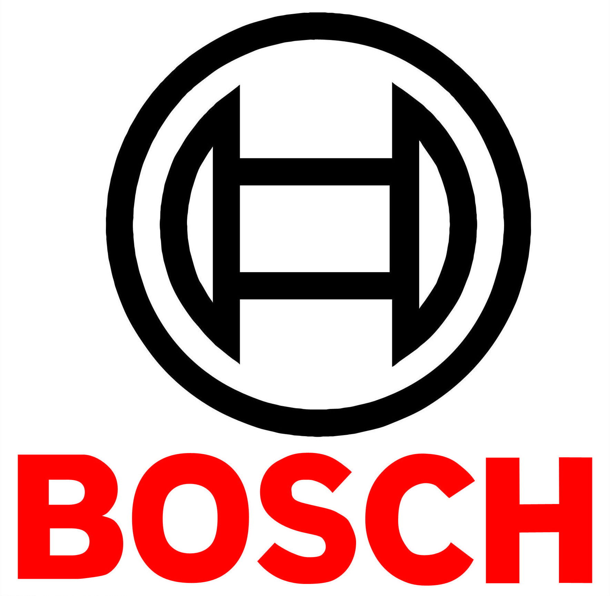
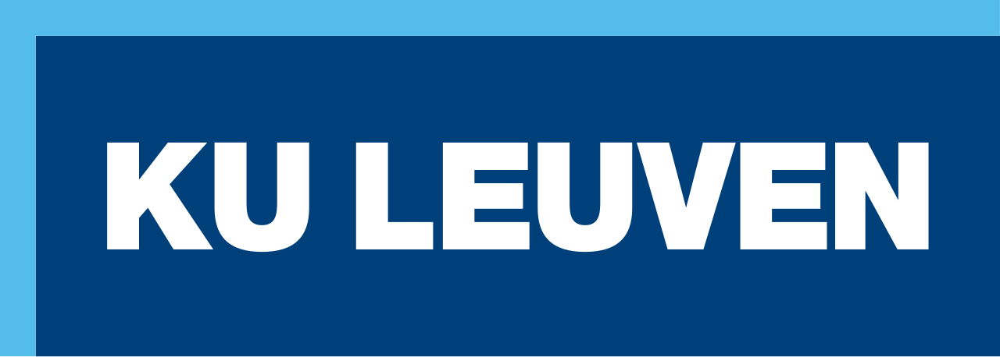
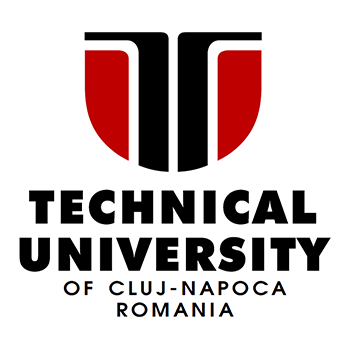
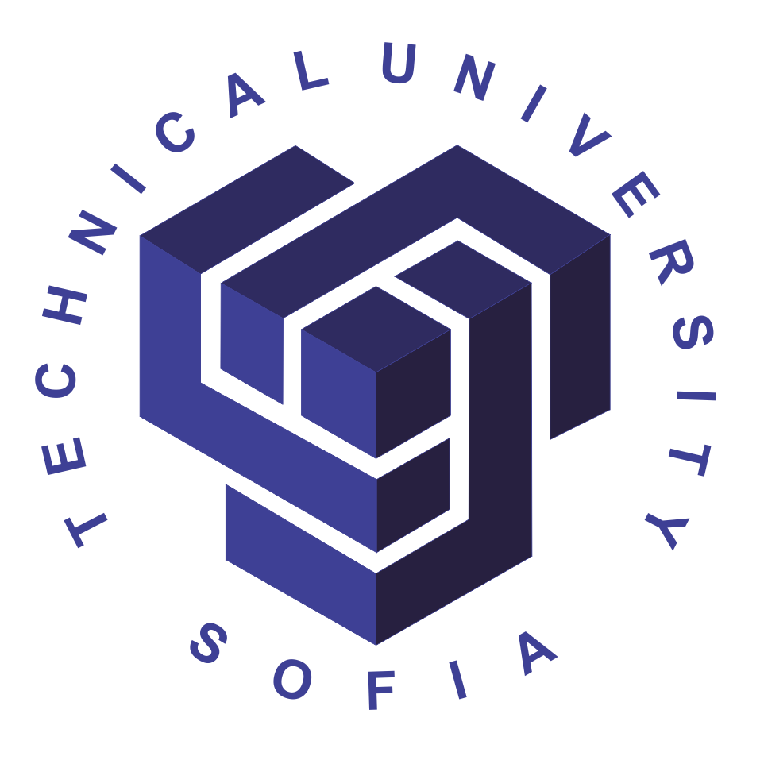

Experience

NTT DATA Romania Dec. 2025 – Jun. 2026
Software Developer
- Built a REST API from scratch using Spring Boot, collaborating in an agile team and documenting endpoints with Swagger.
- Completed intensive, hands-on training across the stack, including frontend development, QA practices, and Mainframe systems.
- Mastered enterprise architecture patterns and legacy system workflows before transitioning into a specialized backend role.

Bosch Romania Aug. 2025 – Oct. 2025
Software Developer
- Wrote Python automation scripts to gather and centralize data from distributed stations, cutting processing time by 80%.
- Built a full-stack Flask app to migrate legacy spreadsheet data into a clean, queryable SQL database.
- Set up automated endpoint monitoring to track equipment health and catch issues before they caused system downtime.
Education

Katholieke Universiteit Leuven Upcoming 2026-2028
Master of Engineering in Computer Science - Artificial Intelligence Track

Technical University of Cluj-Napoca Oct. 2022 – Present
Bachelor of Engineering in Computer Science
University of Porto Feb. 2025 – Jul. 2025
Erasmus Mobility - BSc in CS / BEng Informatics and Computing Engineering
Hanyang University Jun. 2026 – Jul. 2026
International Summer School in Global Innovation and Science

Technical University of Sofia Nov. 2025
Blended Intensive Program in AI & Cybersecurity
GitHub Projects
OCT 3D Drusen Tracking (Thesis)
Built a deep learning pipeline and integrated a reconstruction and a segmentation model with a multidimensional viewer to help track how retinal conditions like AMD progress over time.
Energy Management System
A microservices-based smart energy monitor. Handles real-time device data, sends alerts via WebSockets, and uses RabbitMQ for async communication.
ICU Stay Predictor
An ML pipeline that predicts hospital ICU stay lengths for tachycardia patients using the MIMIC-III dataset. Built with XGBoost and LIME to explain the model's reasoning.
Ride Sharing App
A full-stack ride-sharing platform. I wrote custom spatial indexing and matching algorithms (fully unit-tested with JUnit) to efficiently pair drivers with passengers.
Tropical GrandPrix
An interactive 3D racing simulation featuring dynamic lighting, rain, fog, day-night cycles, and a user-controlled camera.
Polynomial Calculator
A desktop app for doing math on polynomials (derivatives, integrals, etc.). Wrapped in a clean GUI and backed by automated tests.
Apartment Booking App
A desktop booking platform with user accounts, search filters, reservation handling, and an admin dashboard.
Multimedia Extension Unit
Hardware design of an MMX mapped to an FPGA board, allowing for fast SIMD instruction execution for multimedia tasks.
16-Bit MIPS Processor
A ground-up hardware implementation of a single-cycle 16-bit MIPS architecture.
Pocket Calculator
A fully functional pocket calculator built entirely at the hardware logic level.
Radar Detector
An embedded software project that interfaces with hardware to detect radar signals.
Line Follower Robot
Programmed the embedded logic for an autonomous robot that tracks and follows paths using sensor data.
Public Transit App
A cross-platform mobile app that helps users check transit schedules and map out routes.
Queue Management System
A multi-threaded Java application built to simulate and optimize real-time customer queues.
Order Management System
A software tool to track, update, and process customer orders through their lifecycle.
Awards & Competitions
- Best Project Award (Nov. 2025): Built a winning spam detection model as part of a multicultural team at the TU Sofia AI & Cyber program.
- Innovation Labs (Mar. 2024): Qualified for a national start-up accelerator out of a nationwide hackathon. Handled mockups and financial analysis.
- JunctionX Budapest (Nov. 2023): Competed in an international 48-hour hackathon.
- Cloudflight Coding Contest: Competed in the 38th and 39th editions of this algorithmic programming contest.
- First Tech Challenge (2018 & 2019): Reached the national stage in high school competitive robotics.
Volunteering
- Erasmus Student Network: Volunteer for ESN Cluj-Napoca (Sep. 2025 – Present).
- NASA Space Apps: Organized and volunteered at the local Cluj-Napoca challenge (Oct. 2025).
- EUT+ Week: Event volunteer at TUCN (Oct. 2025).